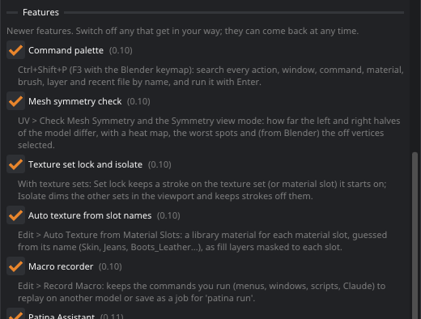
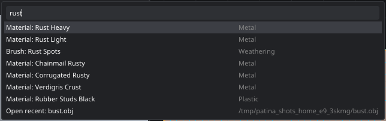
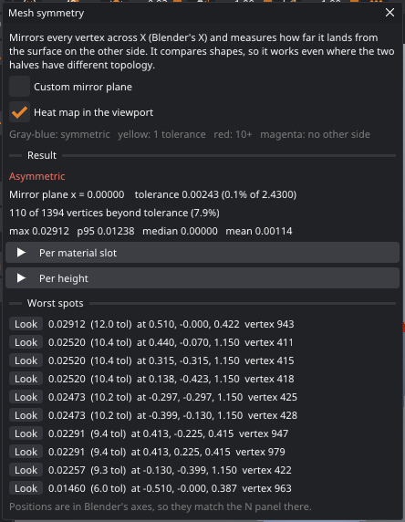
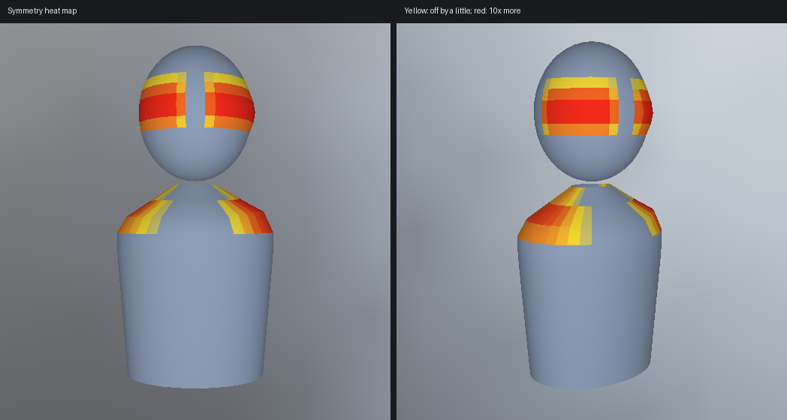
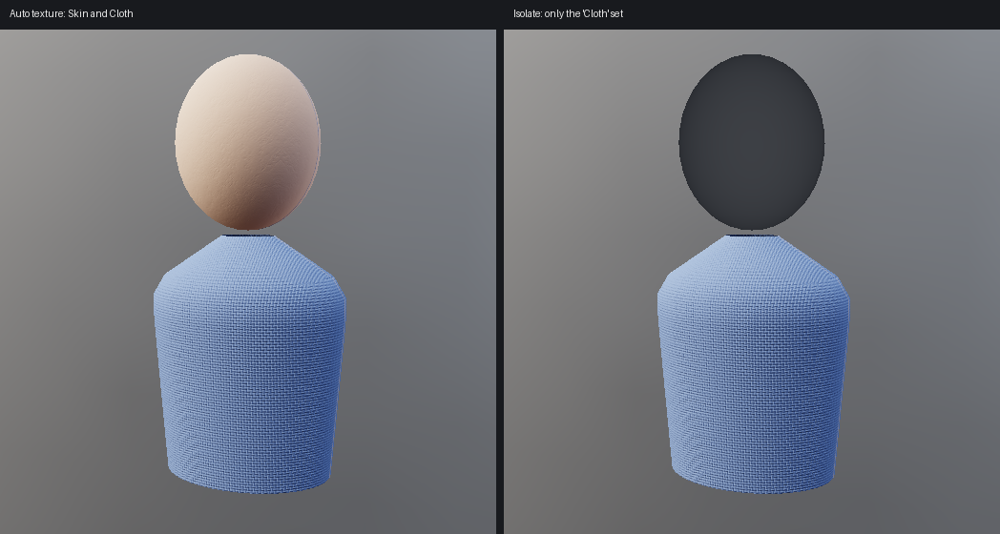
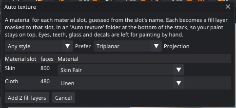
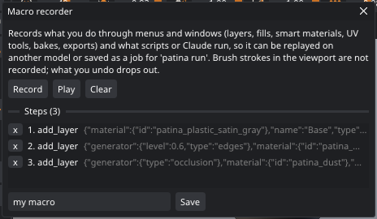

Search, checks and macros
Patina 0.10 adds a command palette that finds anything by name, a mesh symmetry check, tools for models with several texture sets, a one-click first pass of materials from the model's slot names, and a macro recorder. Each one can be switched off in Preferences › Features if it gets in your way.
Switching features on and off
New features arrive switched on. Edit › Preferences lists them under Features, with what each one does. Untick one and its menu entries, buttons, shortcuts and commands go away (scripts and Claude get an error saying it is switched off). The choice is saved with your session; tick it again to bring it back. Nothing else changes: a project painted with a feature on opens fine with it off.

| Feature | Where it shows up |
|---|---|
| Command palette | Ctrl+Shift+P or F3 (F3 or Ctrl+K in the Blender keymap), Edit › Search Everything, Search everything on the Guided layout's step bar |
| Guided layout | The step bar (Model, UVs, Bake, Paint, Export), Guided and Full at the
right of the menu bar, the welcome window's Layout, the layout command (see
The Guided layout) |
| Bake-down | Bake › Bake Down to a Low-Poly Model, the Bake-Down Check view mode, the compare
view's high-poly, the layers kept by Use the quads as the model, the bake_down command (see
Baking down) |
| Mesh symmetry check | UV › Mirrored Halves › Check Mesh Symmetry, the Symmetry view mode, the
mesh_symmetry command, Select Asymmetric Vertices in Blender |
| Texture set lock and isolate | Set lock in the brush bar, Current set, Isolate and Select faces in the Texture Set panel, View › Isolate the Current Texture Set |
| Auto texture from slot names | Edit › Auto Texture from Material Slots, the
auto_texture command |
| Macro recorder | Edit › Record Macro / Play Macro / Macro Recorder, the macro_*
commands |
The command palette
Press Ctrl+Shift+P (or F3; Ctrl+K too in the Blender keymap) and type a few letters of what you want. The palette searches every keyboard action, window, view mode, command, library material, brush, layer and recent file. ↑ ↓ choose, Enter runs it and Esc closes the palette.

- Typing: a whole word ranks highest, then the start of a word, then letters that begin words, so
mscfinds Mesh symmetry check andprefsfinds Preferences. Letters scattered at random through a name don't count, so the list stays short. - What you used recently comes first when the box is empty, and gets a small boost when you type.
- Actions run as if you had pressed their shortcut, so they also work for actions you never gave a key. Commands that need arguments are left out; use the console or a script for those.
- Layers select the layer; recent files open; features can be switched from here too.
Mesh symmetry check
Characters and props are usually meant to be mirror-symmetric, and small differences between the halves cause trouble later: mirrored painting misses, symmetric UVs don't stack, and shape keys or rigging built for one side don't fit the other. UV › Mirrored Halves › Check Mesh Symmetry measures it. Every vertex is mirrored across X (Blender's X) and Patina measures how far it lands from the surface on the other side. Because it compares shapes, not vertex lists, it works even where the two halves have different topology.


- Tolerance is 0.1% of the model's largest size: on a 1.8 m character, 1.8 mm. Vertices further off than that count as asymmetric. Both halves light up: a bump on the right also shows on the left, where the mirror of the left side finds no bump.
- Magenta means there is no surface at all on the other side within 5% of the size: one-sided parts such as a holster, or a model that isn't meant to be symmetric.
- The mirror plane is x = 0 when the model sits on it, else the middle of the model's bulk (a stray vertex or one big bump doesn't move it). Custom mirror plane sets it by hand.
- Per material slot and Per height break the result down, so you can tell whether the problem is the face, the clothes or the hands.
- Worst spots are listed in Blender's axes, so the positions match Blender's N panel. Spots closer than 8% of the size are listed once.
From Blender, Select Asymmetric Vertices in the Patina panel runs the same check on the mesh Patina has open and selects the vertices that are off (and, optionally, the unmatched ones) in Blender, in Object or Edit Mode. Use it to find what to fix with Blender's own symmetrize or snap tools. It needs the mesh sent without modifiers that add or remove faces, so the vertex numbers match.
Working with texture sets
With texture sets per material slot or UDIM tiles, the Texture Set panel gets three more controls:
- Current set picks the texture set the UV editor shows (the same as the list in the UV editor's toolbar).
- Isolate draws the other texture sets as dark ghosts in the viewport, and strokes only paint the current set, wherever they start. Handy for the inside of a jacket or a belt over a shirt.
- Set lock keeps each stroke on the texture set it starts on, so a stroke that starts on the skin stops at the collar. With a single texture it uses the material slot instead. It combines with the topology and island locks.
- Select faces selects every face of the current set; fill with Selection to fill just that set.

Layered PSD export now works with texture sets and UDIM tiles too: each set or tile gets its own PSD files, named like
the PNG maps (Hero_Body_basecolor.psd, Hero_basecolor.1002.psd).
Auto texture from material slots
A model from Blender usually arrives with sensible slot names: Skin, Hair, Jeans, Boots_Leather, M_Steel. Edit › Auto Texture from Material Slots picks a library material for each slot from its name and adds a fill layer per slot, masked by the Material slot smart mask, so you start from a textured model instead of a gray one.

- Names are split into words (
M_BootLeather.001→ boot, leather) and matched against material names, tags and categories, with a list of everyday words: body and face mean skin, shirt linen, jacket a puffer, buckle brass, sole rubber, hull sci-fi panels and so on. - Prefer: realistic or stylized materials. A slot named Toon_Hair asks for the stylized ones by itself.
- Slots that want painting by hand are skipped: eyes, teeth, tongue, glass, decals, logos. So are names with nothing to go on (Material.001).
- The layers go into an Auto texture folder at the bottom of the stack, so anything you paint stays on top. Delete the folder to start again.
- Projection: triplanar (no seams, ignores the UVs) or UV.
Macros
The macro recorder keeps what you do as commands, to replay on another model. Edit › Record Macro starts it (the status bar shows REC and the number of steps); do your thing; Edit › Stop Recording Macro. Play Macro runs the steps on whatever is open now.

- What is recorded: menu actions and windows that run commands (adding layers and fills, smart materials, smart masks, UV tools, bakes, exports, auto texture), and every command a script or Claude runs while recording. Questions that change nothing (state, lists, renders) are left out.
- What isn't: brush strokes you paint in the viewport (they are tied to one model and one view), and opening, saving and the Blender link, so a macro works on whatever is open when you play it.
- Undo while recording: a step you undo drops out of the macro, and comes back if you redo it.
- Save writes the macro as a job file in your configuration folder (
macros/). It is the same formatpatina runuses, so the macro also runs without a window:patina run ~/.config/patina/macros/rust_pass.json. Saved macros are listed in the window with a Play button. - Playing stops at the first step that fails and says which one. Each step is its own undo step.
Shortcuts: Macro: start / stop recording and Macro: play have no key by default; give them one in Edit › Keyboard Shortcuts.
Gotchas
- The symmetry check compares across X only. A model that is symmetric across another axis reads as asymmetric.
- Auto texture guesses from names; it doesn't look at the shape. A slot called Body on a car gets skin.
- A macro replays commands with the values they had: layer indices, materials and paths. Steps that pick a layer by number may pick a different layer on a model with another stack.